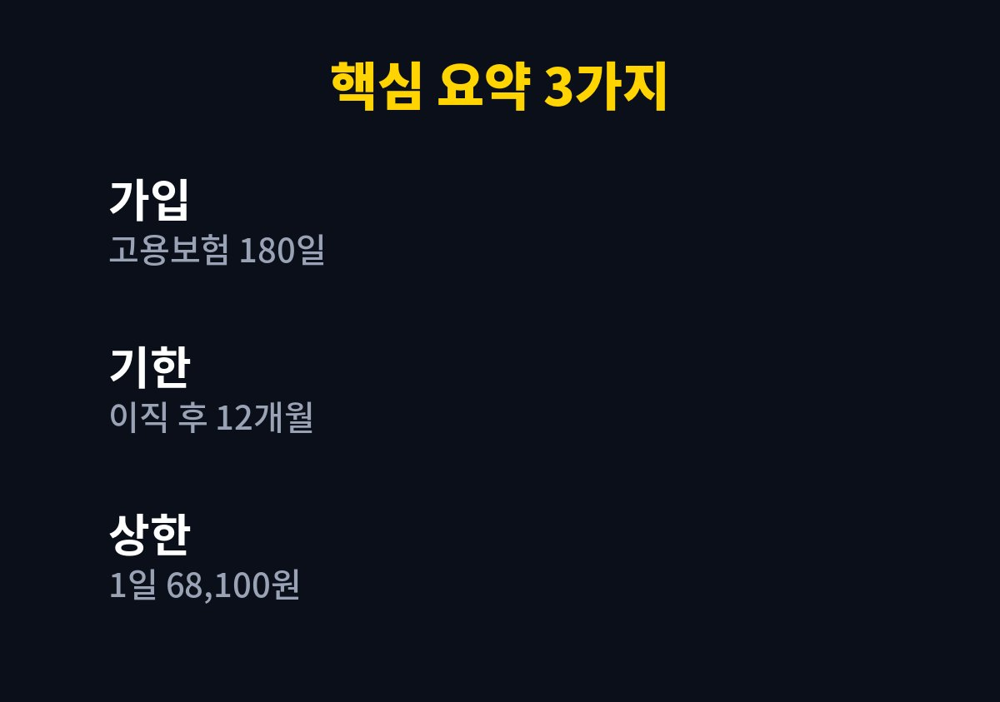
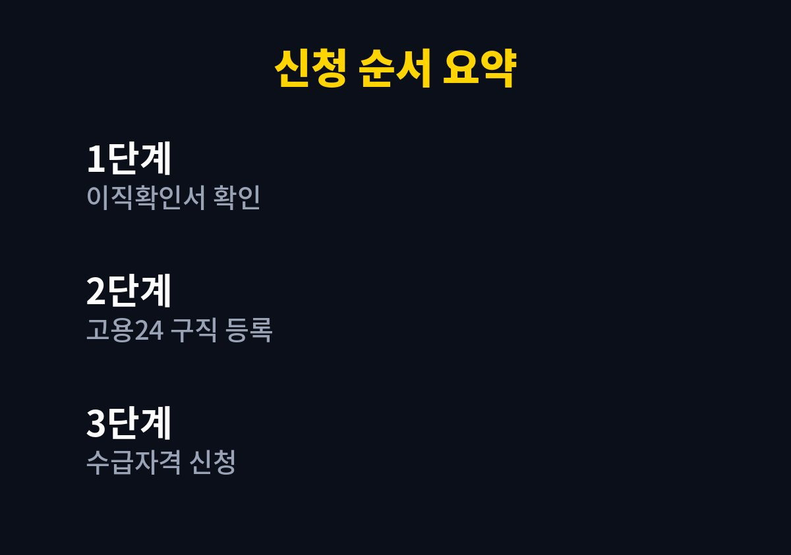

이 글은 최근 회사를 그만두었거나 퇴사를 앞두고 실업급여가 궁금한 분을 위해 쓴 글이다.
2026년 11월 기준으로 내가 찾아보며 정리한 내용이다.
주변에서 퇴사 이야기가 나올 때마다 조건을 몰라 신청 시기를 놓치는 경우가 있다고 들어서 궁금해 알아보았다.
흔히 말하는 실업급여는 고용보험에서 주는 구직급여를 가리키는 말이다.
일자리를 잃은 뒤 다음 일자리를 찾는 동안 생활이 무너지지 않도록 돕는 제도다.
단순히 퇴사했다고 자동으로 나오는 돈이 아니라 조건을 갖춰 신청해야 받을 수 있다.
가장 흔한 실수는 기한과 가입 기간을 따져 보지 않고 미루는 것이다.
퇴사 후 시간이 흐르면 신청할 수 있는 기간이 줄어들기 때문에 서두르는 편이 낫다.
나는 이 제도가 퇴사 이후의 생활비를 완전히 대신해 주는 것이 아니라 다음 일자리를 구할 때까지 버티게 해 주는 장치라고 이해했다.
그래서 받을 수 있는지와 별개로 구직 계획도 함께 세워 두어야 한다.
검색한 자료마다 공통으로 나오는 핵심 조건은 고용보험 가입 기간 180일이다.
이직 전 일정 기간 안에 보험료를 낸 날이 180일 이상인지 확인하는 방식이다.
일용직이나 단기 근로가 섞여 있다면 합산 방법이 달라질 수 있어 고용센터 확인이 필요하다.
퇴사 전에 내 고용보험 가입 이력을 조회해 보면 부족한 날이 있는지 미리 알 수 있다.
가입 이력은 고용보험 사이트에서 직접 확인할 수 있으므로 서류를 뒤지기 전에 먼저 살펴보는 것이 효율적이다.
회사 사정에 따른 이직인지 본인 사정에 따른 퇴사인지에 따라 인정 여부가 달라질 수 있다고 안내된다.
신청은 이직 후 12개월 안에 해야 하는 것으로 정리되어 있다.
구직 활동을 이어 가는 것도 계속 받기 위한 중요한 조건으로 소개된다.
정해진 날짜에 구직 활동을 하지 않으면 지급이 미뤄지거나 중단될 수 있어 일정을 꼼꼼히 기록해 두어야 한다.
이직 사유가 애매하다면 퇴사 전에 상담을 받아 두는 것이 가장 안전하다.

구직급여는 하루 단위로 계산해서 지급일수만큼 받는 구조다.
2026년 기준 1일 상한액은 68,100원으로 소개되었다.
나이와 가입 기간에 따라 지급일수가 달라지므로 내 경우는 고용24의 모의계산으로 확인해 보는 것이 좋다.
금액만 보고 퇴사를 결정하기보다 지급 기간 동안 생활비가 어떻게 되는지 함께 계산해 보아야 한다.
가족이 있다면 한 달 고정 지출을 먼저 적어 보고 부족분이 얼마인지 확인해 두면 마음이 한결 편해진다.
| 항목 | 내용 |
|---|---|
| 가입 기간 | 고용보험 180일 이상 |
| 신청 기한 | 이직 후 12개월 이내 |
| 1일 상한액 | 68,100원(2026년) |
| 신청처 | 고용24·관할 고용센터 |
| 지급일수 | 나이·가입 기간별로 상이 |
하한액과 지급일수 같은 항목은 확인하지 못해 공식 공고에서 보아야 한다.

1. 회사에 이직확인서가 고용보험에 신고되었는지 확인한다.
2. 고용24에서 수급자격 신청을 위한 온라인 교육과 구직 등록을 한다.
3. 가입 기간 180일과 이직 사유를 내 상황에 맞춰 점검한다.
4. 고용센터에 방문하거나 온라인으로 수급자격 인정을 신청한다.
5. 정해진 날짜마다 실업 인정을 받으며 구직 활동 기록을 남긴다.
신분증과 통장 사본, 근로 관련 서류를 미리 준비해 두면 좋다.
서류는 상황별로 다를 수 있어 고용센터 안내를 먼저 확인하는 편이 안전하다.
실업급여를 대신 받아 주겠다며 개인정보를 요구하는 곳은 조심해야 한다.
부정하게 받으면 지급액을 돌려내고 추가로 책임을 질 수 있어 사실대로 신청해야 한다.
조건은 단순해 보여도 이직 사유와 기간 계산에서 갈리는 경우가 많다.
퇴사를 결정하기 전에 고용센터에 먼저 상담해 보시길 권한다.
※ 2026년 11월 기준 공개된 정보를 정리한 글이며, 정확한 대상 요건·금액·신청 기간은 복지로·정부24·관할 주민센터의 공식 공고를 확인하시길 바란다.